Report logic: v4.0 — Current Signal Guardrails + SPY/QQQ Positioning & Flow
The macro backdrop for the release week is best described as constructive but confirmation still matters. In practical portfolio terms, the Treasury market leaned tighter, making multiple expansion harder to justify without stronger earnings support; the VIX moved lower, giving the equity market a more supportive volatility backdrop; and high-yield spreads tightened, supporting the view that corporate-credit stress remains contained.
The bigger picture remains a confirmation exercise. If equities strengthen while credit stays calm and volatility remains contained, the advance has better quality. If those signals diverge, sector selection and risk control become more important.
The S&P 500 finished the covered week at 7,230.12 with a weekly change of +0.91%. That move is most useful when read alongside the Treasury market, credit spreads, crude oil, and the dollar.
The rates market continued to frame the equity setup. 10-year Treasury at 4.39% (+8 bps); 2-year Treasury at 3.88% (+10 bps); 10Y–2Y curve at 0.51% (-2 bps). This matters because higher yields can tighten financial conditions, while lower yields can improve the backdrop for longer-duration assets.
Crude oil closed at $105.38, changing +7.07% for the week. Energy matters beyond the energy sector because it connects to inflation, transportation costs, consumer spending, and corporate margins.
Safe-haven and liquidity signals were evaluated through gold was not a primary signal and the broad U.S. dollar index at 118.39 (-0.28%). The dollar matters for global liquidity and multinational earnings, while gold can reflect real-rate pressure, inflation hedging, or defensive demand.
The credit read matters because it reflects how investors are pricing default and liquidity risk. This week’s key credit levels were high-yield spreads at 2.77% (-9 bps) and investment-grade spreads at 0.81% (+1 bps).
Initial claims came in at 190,000 with a weekly move of -11.63%. This remains a useful early signal for household income, consumption, and the Fed’s policy path.
The 30-year mortgage rate was 6.30% (+7 bps). Housing, homebuilders, regional banks, and consumer confidence remain closely tied to the Treasury market.
| Category | Series | Latest | Weekly Change | Current Signal (This Week) | If This Data Goes Higher, Usually Means |
|---|---|---|---|---|---|
| Risk Appetite | S&P 500 | 7,230.12 | +0.91% | risk-on / equity strength | risk-on |
| Volatility | VIX Volatility Index | 16.99 | -1.72 | volatility stress easing | stress |
| Rates | 10-Year Treasury Yield | 4.39% | +8 bps | tighter financial conditions | tighter financial conditions |
| Rates | 2-Year Treasury Yield | 3.88% | +10 bps | hawkish Fed expectations | hawkish Fed expectations |
| Rates | 10Y–2Y Yield Curve | 0.51% | -2 bps | flatter curve / recession pressure rising | steeper curve |
| Fed Policy | Effective Fed Funds Rate | 3.64% | +0 bps | policy rate steady | tighter policy |
| Energy | WTI Crude Oil | $105.38 | +7.07% | inflation pressure rising | inflation pressure |
| Dollar | Broad U.S. Dollar Index | 118.39 | -0.28% | weaker dollar / easier global liquidity | stronger dollar |
| Credit | High Yield Credit Spread | 2.77% | -9 bps | credit stress easing | credit stress |
| Credit | Investment Grade Credit Spread | 0.81% | +1 bps | credit stress rising | credit stress |
| Liquidity | Fed Balance Sheet | $6.70T | -0.11% | liquidity tightening | more liquidity |
| Housing | 30-Year Mortgage Rate | 6.30% | +7 bps | housing pressure rising | housing pressure |
| Labor Market | Initial Jobless Claims | 190,000 | -11.63% | labor strength / fewer layoffs | labor weakness |
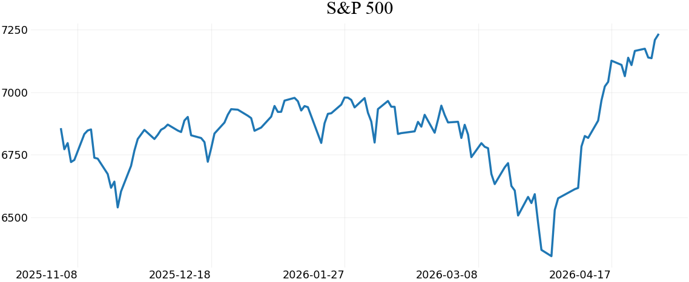
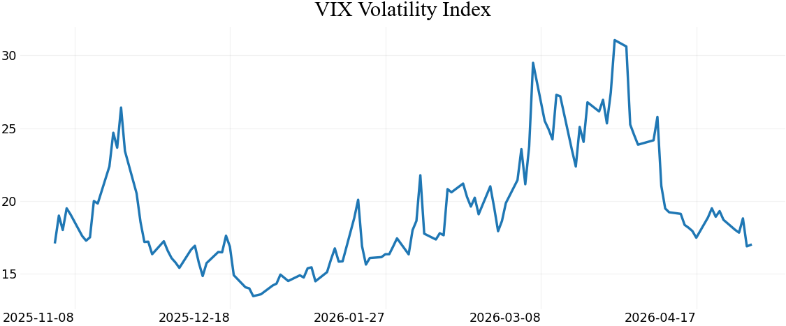
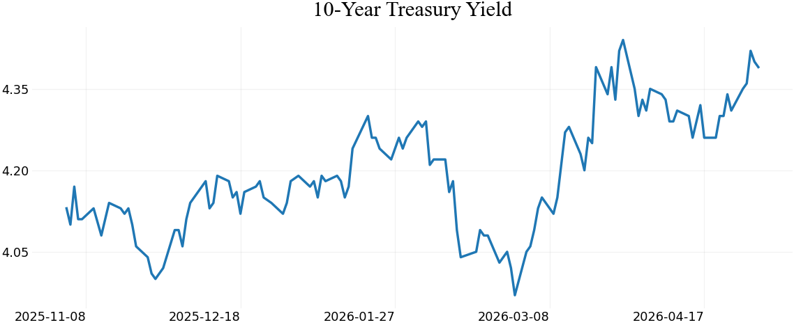
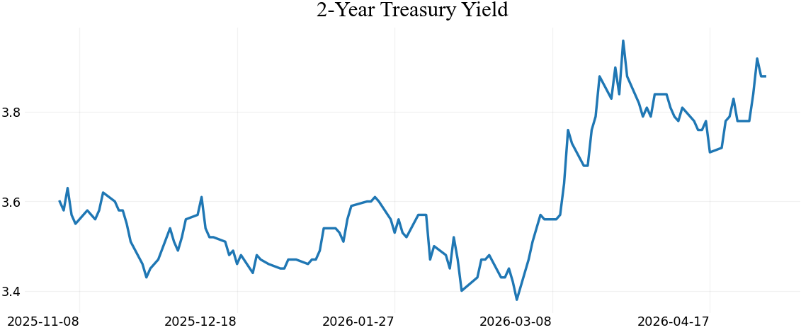
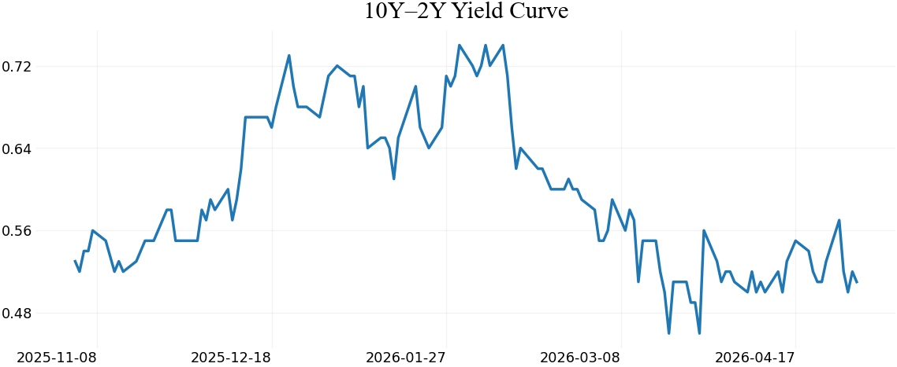
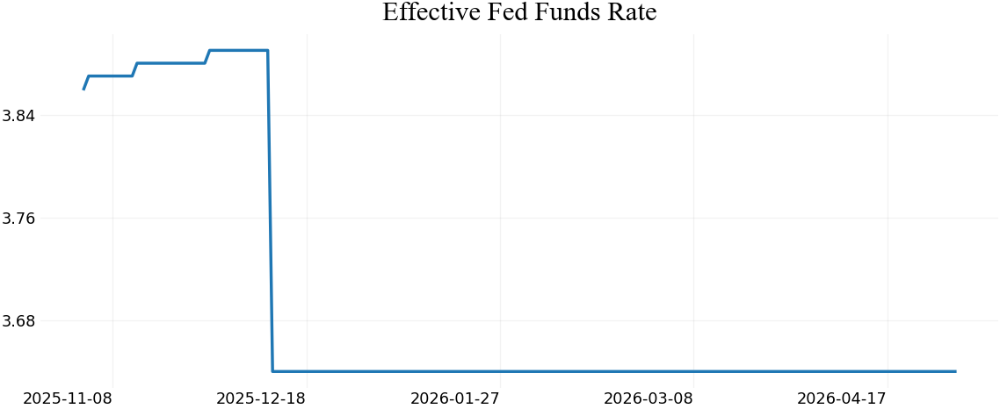
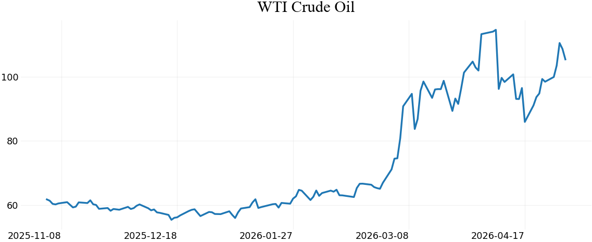
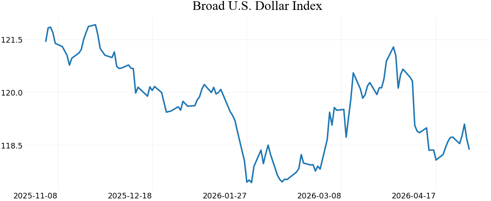
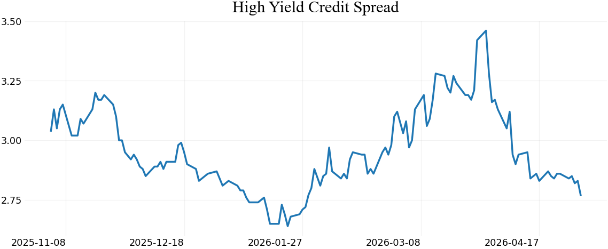
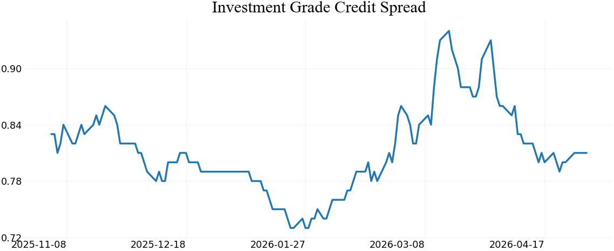
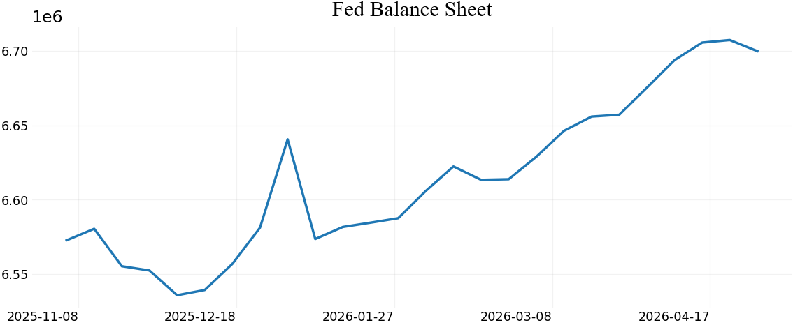
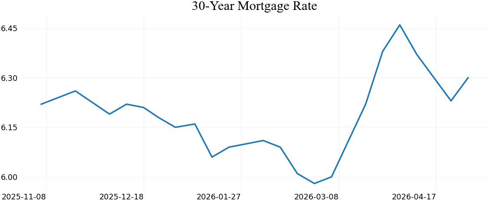
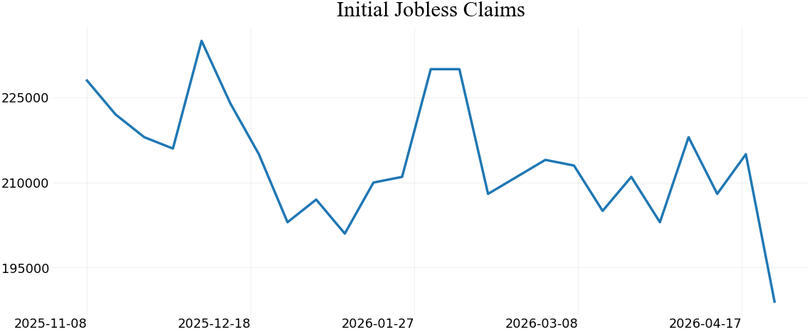
This section estimates the bid and offer behind price using public proxies. It does not claim to know a live dealer book. Dealer pressure is estimated from options open interest, put/call ratios, and gamma exposure; CTA pressure is estimated from trend and moving averages; hedge-fund positioning is proxied by CFTC leveraged-funds futures data when available.
| Ticker | Spot | 5D Return | 20D Return | Positioning Read | Dealer / Gamma Proxy | Call Wall | Put Wall | Put/Call OI | Net Gamma Proxy | CTA Proxy | Hedge Fund Proxy | Volume Flow |
|---|---|---|---|---|---|---|---|---|---|---|---|---|
| SPY | +0.94% | +9.88% | constructive flow / bid likely stronger | option chain unavailable | CTA proxy: trend-followers likely net buyers / long pressure | Leveraged funds net -407,490 contracts; weekly change +4,831 | volume near 20D average | |||||
| QQQ | +1.55% | +15.24% | constructive flow / bid likely stronger | option chain unavailable | CTA proxy: trend-followers likely net buyers / long pressure | Leveraged funds net -35,950 contracts; weekly change +3,050 | volume near 20D average |
For the week ahead, the most important read is not one data point by itself. The better process is to compare the S&P 500 against rates, credit spreads, volatility, crude oil, the dollar, and leadership from the largest index weights.
The names below help translate the macro backdrop into equity-market leadership. They are included as monitoring points for breadth, sector rotation, and risk appetite.
| Ticker | Company | Sector / Lens | Last Price | Weekly Change | Why Watch |
|---|---|---|---|---|---|
| NVDA | NVIDIA | AI semiconductors | $198.45 | -4.72% | Major index leadership driver; important for AI capex sentiment, semiconductor breadth, and high-multiple growth risk. |
| MSFT | Microsoft | Software / cloud / AI | $414.44 | -2.40% | Key quality-growth bellwether tied to enterprise spending, cloud demand, AI infrastructure, and interest-rate sensitivity. |
| AAPL | Apple | Consumer hardware / services | $280.14 | +3.35% | Large S&P 500 weight; useful read-through for consumer demand, China exposure, services margins, and mega-cap risk appetite. |
| AMD | Advanced Micro Devices | Semiconductors / AI compute | $360.54 | +3.66% | Helps judge whether AI enthusiasm is broadening beyond one dominant chip leader. |
| LOW | Lowe’s | Housing / consumer | $233.33 | -4.55% | Confirms housing-linked consumer spending and rate-sensitive demand trends. |
| MA | Mastercard | Payments / consumer | $495.46 | -1.73% | Confirms consumer and cross-border spending trends through payment volume. |
| GOOGL | Alphabet | Digital advertising / AI | $385.69 | +11.99% | Ad demand and AI spending help gauge corporate confidence and mega-cap breadth. |
| V | Visa | Payments / consumer | $328.03 | +6.01% | High-quality consumer-spending signal with global transaction exposure. |
| GS | Goldman Sachs | Capital markets | $923.71 | -0.35% | Useful read on deal activity, risk appetite, trading conditions, and institutional confidence. |
| GE | GE Aerospace | Industrials / aerospace | $286.51 | +0.67% | Industrial quality bellwether tied to aerospace demand and capital spending. |
| BAC | Bank of America | Banks / rates | $53.24 | +2.29% | Highly relevant when yield-curve movement and deposit-cost pressure matter for financials. |
| TSLA | Tesla | High beta / consumer discretionary | $390.82 | +3.86% | High-beta sentiment gauge sensitive to rates, consumer demand, margins, and risk appetite. |